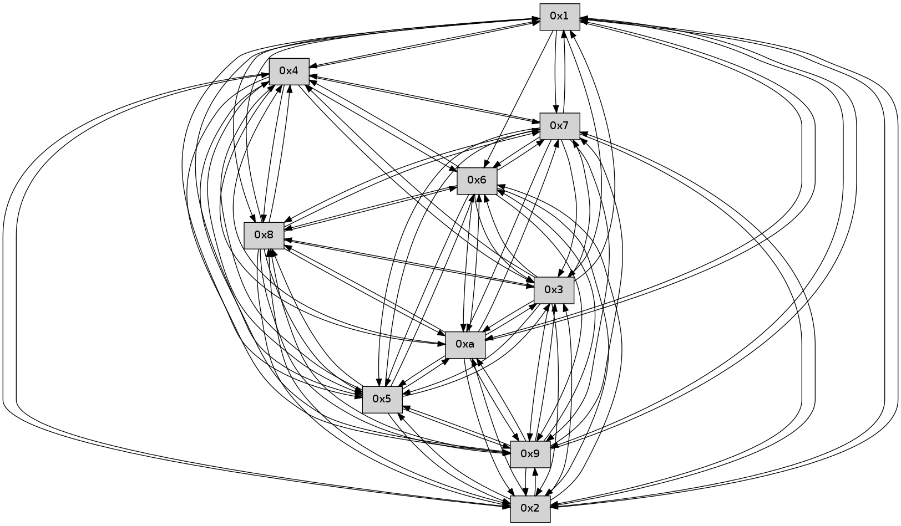

>> << IDX [start] -100 -25 -5 +0 +5 +25 +100 [395.282093048]
 Previous packets
----------------------------------------------------------------------
390.553298 beacon01(faad) #0 coord=01,02,03,04,05,06,07,0a,09,08 cycle=688.0ms assoc
-- color-indic=0 64 72 47
390.563282 beacon02(faad) #0 coord=01,02,03,04,05,06,07,0a,09,08 cycle=688.0ms assoc 64 e1 76
390.573281 beacon03(faad) #0 coord=01,02,03,04,05,06,07,0a,09,08 cycle=688.0ms assoc 64 9b 3b
390.583281 beacon04(faad) #0 coord=01,02,03,04,05,06,07,0a,09,08 cycle=688.0ms assoc 64 ec d1
390.593280 beacon05(faad) #0 coord=01,02,03,04,05,06,07,0a,09,08 cycle=688.0ms assoc 64 96 9c
390.603282 beacon06(faad) #0 coord=01,02,03,04,05,06,07,0a,09,08 cycle=688.0ms assoc 64 18 4b
390.613281 beacon07(faad) #0 coord=01,02,03,04,05,06,07,0a,09,08 cycle=688.0ms assoc 64 62 06
390.623286 beacon0a(faad) #0 coord=01,02,03,04,05,06,07,0a,09,08 cycle=688.0ms assoc 64 13 0d
390.633286 beacon09(faad) #0 coord=01,02,03,04,05,06,07,0a,09,08 cycle=688.0ms assoc 64 9d da
390.643287 beacon08(faad) #0 coord=01,02,03,04,05,06,07,0a,09,08 cycle=688.0ms assoc 64 e7 97
390.654438 [Hello(9): seq=196 sym=5,2,3,4,7,6,8,10,1 sysInfo= stat=5:9,0,0,0/2:5,0,0,0/3:4,0,0,0/4:14,0,0,0/7:15,0,0,0/6:5,0,0,0/8:3,0,0,0/10:9,0,0,0/1:14,0,0,0]
390.657604 [Hello(10): seq=185 sym=6,3,2,5,9,8,7,4,1 sysInfo= stat=6:15,0,0,0/3:6,0,0,0/2:13,0,0,0/5:9,0,0,0/9:7,0,0,0/8:9,0,0,0/7:3,0,0,0/4:3,0,0,0/1:11,0,0,0]
390.660016 [Hello(5): seq=253 sym=7,6,4,3,1,9,8,10,2 sysInfo= stat=7:7,0,0,0/6:9,0,0,0/4:3,0,0,0/3:13,0,0,0/1:9,0,0,0/9:13,0,0,0/8:15,0,0,0/10:15,0,0,0/2:8,0,0,0]
390.662676 [Hello(4): seq=253 sym=5,7,6,2,3,9,8,10,1 sysInfo= stat=5:7,0,0,0/7:8,0,0,0/6:11,0,0,0/2:4,0,0,0/3:1,0,0,0/9:12,0,0,0/8:0,0,0,0/10:4,0,0,0/1:9,0,0,0]
390.665244 [Hello(8): seq=196 sym=5,2,3,4,7,6,9,10,1 sysInfo= stat=5:14,0,0,0/2:2,0,0,0/3:15,0,0,0/4:3,0,0,0/7:14,0,0,0/6:1,0,0,0/9:10,0,0,0/10:5,0,0,0/1:1,0,0,0]
390.668416 [Hello(3): seq=253 sym=1,7,6,2,4,8,9,10,5 sysInfo= stat=1:9,0,0,0/7:2,0,0,0/6:14,0,0,0/2:7,0,0,0/4:12,0,0,0/8:11,0,0,0/9:4,0,0,0/10:13,0,0,0/5:10,0,0,0]
390.674046 [Hello(2): seq=250 sym=4,5,7,6,3,9,8,10,1 sysInfo= stat=4:14,0,0,0/5:4,0,0,0/7:2,0,0,0/6:9,0,0,0/3:5,0,0,0/9:6,0,0,0/8:0,0,0,0/10:13,0,0,0/1:6,0,0,0]
----------------------------------------------------------------------
391.341429 beacon01(faad) #0 coord=01,02,03,04,05,06,07,0a,09,08 cycle=688.0ms assoc
-- color-indic=0 64 b6 49
391.351412 beacon02(faad) #0 coord=01,02,03,04,05,06,07,0a,09,08 cycle=688.0ms assoc 64 25 78
391.361411 beacon03(faad) #0 coord=01,02,03,04,05,06,07,0a,09,08 cycle=688.0ms assoc 64 5f 35
391.371412 beacon04(faad) #0 coord=01,02,03,04,05,06,07,0a,09,08 cycle=688.0ms assoc 64 28 df
391.381412 beacon05(faad) #0 coord=01,02,03,04,05,06,07,0a,09,08 cycle=688.0ms assoc 64 52 92
391.391412 beacon06(faad) #0 coord=01,02,03,04,05,06,07,0a,09,08 cycle=688.0ms assoc 64 dc 45
391.401414 beacon07(faad) #0 coord=01,02,03,04,05,06,07,0a,09,08 cycle=688.0ms assoc 64 a6 08
391.411417 beacon0a(faad) #0 coord=01,02,03,04,05,06,07,0a,09,08 cycle=688.0ms assoc 64 d7 03
391.421417 beacon09(faad) #0 coord=01,02,03,04,05,06,07,0a,09,08 cycle=688.0ms assoc 64 59 d4
391.431417 beacon08(faad) #0 coord=01,02,03,04,05,06,07,0a,09,08 cycle=688.0ms assoc 64 23 99
391.443517 [Hello(6): seq=253 sym=2,3,5,4,7,9,8,10,1 sysInfo= stat=2:10,0,0,0/3:10,0,0,0/5:8,0,0,0/4:13,0,0,0/7:13,0,0,0/9:8,0,0,0/8:8,0,0,0/10:2,0,0,0/1:1,0,0,0]
391.447961 [Hello(7): seq=253 sym=2,3,5,6,4,8,9,10,1 sysInfo= stat=2:8,0,0,0/3:6,0,0,0/5:13,0,0,0/6:8,0,0,0/4:5,0,0,0/8:0,0,0,0/9:4,0,0,0/10:2,0,0,0/1:7,0,0,0]
----------------------------------------------------------------------
392.129562 beacon01(faad) #0 coord=01,02,03,04,05,06,07,0a,09,08 cycle=688.0ms assoc
-- color-indic=0 64 0a 4c
392.139545 beacon02(faad) #0 coord=01,02,03,04,05,06,07,0a,09,08 cycle=688.0ms assoc 64 99 7d
392.149544 beacon03(faad) #0 coord=01,02,03,04,05,06,07,0a,09,08 cycle=688.0ms assoc 64 e3 30
392.159546 beacon04(faad) #0 coord=01,02,03,04,05,06,07,0a,09,08 cycle=688.0ms assoc 64 94 da
392.169544 beacon05(faad) #0 coord=01,02,03,04,05,06,07,0a,09,08 cycle=688.0ms assoc 64 ee 97
392.179545 beacon06(faad) #0 coord=01,02,03,04,05,06,07,0a,09,08 cycle=688.0ms assoc 64 60 40
392.189545 beacon07(faad) #0 coord=01,02,03,04,05,06,07,0a,09,08 cycle=688.0ms assoc 64 1a 0d
392.199550 beacon0a(faad) #0 coord=01,02,03,04,05,06,07,0a,09,08 cycle=688.0ms assoc 64 6b 06
392.209550 beacon09(faad) #0 coord=01,02,03,04,05,06,07,0a,09,08 cycle=688.0ms assoc 64 e5 d1
392.219549 beacon08(faad) #0 coord=01,02,03,04,05,06,07,0a,09,08 cycle=688.0ms assoc 64 9f 9c
392.230719 [Hello(4): seq=254 sym=5,7,6,2,3,9,8,10,1 sysInfo= stat=5:7,0,0,0/7:9,0,0,0/6:12,0,0,0/2:5,0,0,0/3:2,0,0,0/9:12,0,0,0/8:1,0,0,0/10:4,0,0,0/1:9,0,0,0]
392.234680 [Hello(3): seq=254 sym=1,7,6,2,4,8,9,10,5 sysInfo= stat=1:10,0,0,0/7:3,0,0,0/6:14,0,0,0/2:8,0,0,0/4:12,0,0,0/8:11,0,0,0/9:4,0,0,0/10:13,0,0,0/5:10,0,0,0]
392.237707 [Hello(10): seq=186 sym=6,3,2,5,9,8,7,4,1 sysInfo= stat=6:0,0,0,0/3:7,0,0,0/2:14,0,0,0/5:10,0,0,0/9:7,0,0,0/8:10,0,0,0/7:4,0,0,0/4:4,0,0,0/1:11,0,0,0]
392.241527 [Hello(2): seq=251 sym=4,5,7,6,3,9,8,10,1 sysInfo= stat=4:14,0,0,0/5:4,0,0,0/7:3,0,0,0/6:10,0,0,0/3:5,0,0,0/9:6,0,0,0/8:0,0,0,0/10:13,0,0,0/1:6,0,0,0]
392.244568 [Hello(8): seq=197 sym=5,2,3,4,7,6,9,10,1 sysInfo= stat=5:14,0,0,0/2:3,0,0,0/3:0,0,0,0/4:3,0,0,0/7:15,0,0,0/6:2,0,0,0/9:10,0,0,0/10:5,0,0,0/1:1,0,0,0]
392.250130 [Hello(5): seq=254 sym=7,6,4,3,1,9,8,10,2 sysInfo= stat=7:8,0,0,0/6:10,0,0,0/4:4,0,0,0/3:14,0,0,0/1:9,0,0,0/9:13,0,0,0/8:0,0,0,0/10:15,0,0,0/2:9,0,0,0]
392.254344 [Hello(9): seq=197 sym=5,2,3,4,7,6,8,10,1 sysInfo= stat=5:9,0,0,0/2:6,0,0,0/3:5,0,0,0/4:15,0,0,0/7:0,0,0,0/6:6,0,0,0/8:4,0,0,0/10:10,0,0,0/1:14,0,0,0]
----------------------------------------------------------------------
392.917694 beacon01(faad) #0 coord=01,02,03,04,05,06,07,0a,09,08 cycle=688.0ms assoc
-- color-indic=0 64 3e 54
392.927677 beacon02(faad) #0 coord=01,02,03,04,05,06,07,0a,09,08 cycle=688.0ms assoc 64 ad 65
392.937677 beacon03(faad) #0 coord=01,02,03,04,05,06,07,0a,09,08 cycle=688.0ms assoc 64 d7 28
392.947676 beacon04(faad) #0 coord=01,02,03,04,05,06,07,0a,09,08 cycle=688.0ms assoc 64 a0 c2
392.957677 beacon05(faad) #0 coord=01,02,03,04,05,06,07,0a,09,08 cycle=688.0ms assoc 64 da 8f
392.967677 beacon06(faad) #0 coord=01,02,03,04,05,06,07,0a,09,08 cycle=688.0ms assoc 64 54 58
392.977678 beacon07(faad) #0 coord=01,02,03,04,05,06,07,0a,09,08 cycle=688.0ms assoc 64 2e 15
392.987682 beacon0a(faad) #0 coord=01,02,03,04,05,06,07,0a,09,08 cycle=688.0ms assoc 64 5f 1e
392.997683 beacon09(faad) #0 coord=01,02,03,04,05,06,07,0a,09,08 cycle=688.0ms assoc 64 d1 c9
393.007684 beacon08(faad) #0 coord=01,02,03,04,05,06,07,0a,09,08 cycle=688.0ms assoc 64 ab 84
393.019164 [Hello(7): seq=254 sym=2,3,5,6,4,8,9,10,1 sysInfo= stat=2:9,0,0,0/3:7,0,0,0/5:14,0,0,0/6:8,0,0,0/4:6,0,0,0/8:1,0,0,0/9:5,0,0,0/10:3,0,0,0/1:7,0,0,0]
393.023770 [Hello(6): seq=254 sym=2,3,5,4,7,9,8,10,1 sysInfo= stat=2:11,0,0,0/3:11,0,0,0/5:9,0,0,0/4:14,0,0,0/7:14,0,0,0/9:9,0,0,0/8:9,0,0,0/10:3,0,0,0/1:1,0,0,0]
----------------------------------------------------------------------
393.705828 beacon01(faad) #0 coord=01,02,03,04,05,06,07,0a,09,08 cycle=688.0ms assoc
-- color-indic=0 64 82 51
393.715809 beacon02(faad) #0 coord=01,02,03,04,05,06,07,0a,09,08 cycle=688.0ms assoc 64 11 60
393.725811 beacon03(faad) #0 coord=01,02,03,04,05,06,07,0a,09,08 cycle=688.0ms assoc 64 6b 2d
393.735811 beacon04(faad) #0 coord=01,02,03,04,05,06,07,0a,09,08 cycle=688.0ms assoc 64 1c c7
393.745810 beacon05(faad) #0 coord=01,02,03,04,05,06,07,0a,09,08 cycle=688.0ms assoc 64 66 8a
393.755811 beacon06(faad) #0 coord=01,02,03,04,05,06,07,0a,09,08 cycle=688.0ms assoc 64 e8 5d
393.765812 beacon07(faad) #0 coord=01,02,03,04,05,06,07,0a,09,08 cycle=688.0ms assoc 64 92 10
393.775815 beacon0a(faad) #0 coord=01,02,03,04,05,06,07,0a,09,08 cycle=688.0ms assoc 64 e3 1b
393.785815 beacon09(faad) #0 coord=01,02,03,04,05,06,07,0a,09,08 cycle=688.0ms assoc 64 6d cc
393.795820 beacon08(faad) #0 coord=01,02,03,04,05,06,07,0a,09,08 cycle=688.0ms assoc 64 17 81
393.806985 [Hello(8): seq=198 sym=5,2,3,4,7,6,9,10,1 sysInfo= stat=5:15,0,0,0/2:3,0,0,0/3:0,0,0,0/4:3,0,0,0/7:0,0,0,0/6:3,0,0,0/9:11,0,0,0/10:5,0,0,0/1:1,0,0,0]
393.812996 [Hello(3): seq=255 sym=1,7,6,2,4,8,9,10,5 sysInfo= stat=1:11,0,0,0/7:4,0,0,0/6:14,0,0,0/2:9,0,0,0/4:12,0,0,0/8:12,0,0,0/9:5,0,0,0/10:14,0,0,0/5:11,0,0,0]
393.815874 [Hello(2): seq=252 sym=4,5,7,6,3,9,8,10,1 sysInfo= stat=4:14,0,0,0/5:5,0,0,0/7:4,0,0,0/6:11,0,0,0/3:5,0,0,0/9:7,0,0,0/8:1,0,0,0/10:13,0,0,0/1:6,0,0,0]
393.818440 [Hello(5): seq=255 sym=7,6,4,3,1,9,8,10,2 sysInfo= stat=7:9,0,0,0/6:11,0,0,0/4:4,0,0,0/3:14,0,0,0/1:9,0,0,0/9:14,0,0,0/8:0,0,0,0/10:15,0,0,0/2:9,0,0,0]
393.823387 [Hello(10): seq=187 sym=6,3,2,5,9,8,7,4,1 sysInfo= stat=6:1,0,0,0/3:7,0,0,0/2:15,0,0,0/5:11,0,0,0/9:8,0,0,0/8:11,0,0,0/7:5,0,0,0/4:4,0,0,0/1:11,0,0,0]
----------------------------------------------------------------------
394.493959 beacon01(faad) #0 coord=01,02,03,04,05,06,07,0a,09,08 cycle=688.0ms assoc
-- color-indic=0 64 46 5f
394.503942 beacon02(faad) #0 coord=01,02,03,04,05,06,07,0a,09,08 cycle=688.0ms assoc 64 d5 6e
394.513941 beacon03(faad) #0 coord=01,02,03,04,05,06,07,0a,09,08 cycle=688.0ms assoc 64 af 23
394.523941 beacon04(faad) #0 coord=01,02,03,04,05,06,07,0a,09,08 cycle=688.0ms assoc 64 d8 c9
394.533943 beacon05(faad) #0 coord=01,02,03,04,05,06,07,0a,09,08 cycle=688.0ms assoc 64 a2 84
394.543942 beacon06(faad) #0 coord=01,02,03,04,05,06,07,0a,09,08 cycle=688.0ms assoc 64 2c 53
394.553942 beacon07(faad) #0 coord=01,02,03,04,05,06,07,0a,09,08 cycle=688.0ms assoc 64 56 1e
394.563946 beacon0a(faad) #0 coord=01,02,03,04,05,06,07,0a,09,08 cycle=688.0ms assoc 64 27 15
394.573947 beacon09(faad) #0 coord=01,02,03,04,05,06,07,0a,09,08 cycle=688.0ms assoc 64 a9 c2
394.583948 beacon08(faad) #0 coord=01,02,03,04,05,06,07,0a,09,08 cycle=688.0ms assoc 64 d3 8f
394.595425 [Hello(6): seq=255 sym=2,3,5,4,7,9,8,10 sysInfo= stat=2:12,0,0,0/3:12,0,0,0/5:10,0,0,0/4:15,0,0,0/7:14,0,0,0/9:9,0,0,0/8:10,0,0,0/10:4,0,0,0]
394.598444 [Hello(1): seq=164 sym=4,2,9,5,10,3,8,6,7 sysInfo= stat=4:14,0,0,0/2:2,0,0,0/9:10,0,0,0/5:4,0,0,0/10:15,0,0,0/3:5,0,0,0/8:5,0,0,0/6:9,0,0,0/7:12,0,0,0]
394.602093 [Hello(7): seq=255 sym=2,3,5,6,4,8,9,10,1 sysInfo= stat=2:10,0,0,0/3:8,0,0,0/5:15,0,0,0/6:9,0,0,0/4:7,0,0,0/8:2,0,0,0/9:5,0,0,0/10:4,0,0,0/1:7,0,0,0]